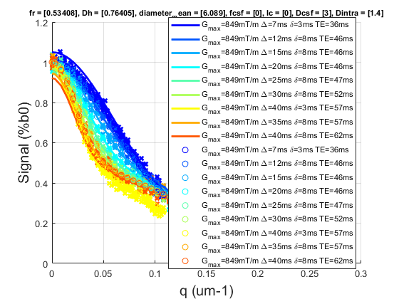

CHARMED¶
Contents
DESCRIPTION
Batch to process CHARMED data without qMRLab GUI (graphical user interface) Run this script line by line
help CHARMED %**************************************************************************
CHARMED: Composite Hindered and Restricted Model for Diffusion
Assumptions:
Diffusion gradients are applied perpendicularly to the neuronal fibers.
Neuronal fibers are parallel (orientational dispersion is negligible).
The intra-axonal diffusion coefficient (Dr) is fixed. this assumption
should have little impact if the average propagator is larger than
axonal diameter (sqrt(2*Dr*Delta)>8µm).
Permeability of the neuronal fibers is negligible.
Inputs:
DiffusionData 4D DWI
(SigmaNoise) map of the standard deviation of the noise per voxel
(Mask) Binary mask to accelerate the fitting
Outputs:
fr Fraction of water in the restricted compartment.
Dh Apparent diffusion coefficient of the hindered compartment.
diameter_mean Mean axonal diameter weighted by the axonal area --> biased toward the larger axons
fixed to 0 --> stick model (recommended if Gmax < 300mT/m).
fcsf Fraction of water in the CSF compartment. (fixed to 0 by default)
lc Length of coherence. If > 0, this parameter models the time dependence
of the hindered diffusion coefficient Dh.
Els Fieremans et al. Neuroimage 2016.
Interpretation is not perfectly known.
Use option "Time-Dependent Models" to get different interpretations.
(fh) Fraction of water in the hindered compartment, calculated as: 1 - fr - fcsf
(residue) Fitting residuals
Options:
Rician noise bias Used if no SigmaNoise map is provided.
'Compute Sigma per voxel' Sigma is estimated by computing the STD across repeated scans.
'fix sigma' Use scd_noise_std_estimation to measure noise level. Use 'value' to fix Sigma.
Display Type:
'q-value' abscissa for plots: q = gamma.delta.G (µm-1)
'b-value' abscissa for plots: b = (2.pi.q)^2.(Delta-delta/3) (s/mm2)
S0 normalization
'Use b=0' Use b=0 images. In case of variable TE, your dataset requires a b=0 for each TE.
'Single T2 compartment' In case of variable TE acquisition:
fit single T2 using data acquired at b<1000s/mm2 (assuming Gaussian diffusion))
Time-dependent models:
'Burcaw 2015' XXX
'Ning MRM 2016' XXX
Example of command line usage (see also qMRLab\Data\CHARMED_demo\CHARMED_batch.m):
Model = CHARMED; % Create class from model
Model.Prot.DiffusionData.Mat = txt2mat('Protocol.txt'); % Load protocol
data = struct; % Create data structure
data.DiffusionData = load_nii_data('DiffusionData.nii.gz'); % Load data
data.Mask=load_nii_data('Mask.nii.gz'); % Load mask
FitResults = FitData(data,Model,1); % Fit each voxel within mask
FitResultsSave_nii(FitResults,'DiffusionData.nii.gz'); % Save in local folder: FitResults/
For more examples: qMRusage(CHARMED)
Author: Tanguy Duval, 2016
References:
Please cite the following if you use this module:
Assaf, Y., Basser, P.J., 2005. Composite hindered and restricted model of diffusion (CHARMED) MR imaging of the human brain. Neuroimage 27, 48?58.
In addition to citing the package:
Cabana J-F, Gu Y, Boudreau M, Levesque IR, Atchia Y, Sled JG, Narayanan S, Arnold DL, Pike GB, Cohen-Adad J, Duval T, Vuong M-T and Stikov N. (2016), Quantitative magnetization transfer imaging made easy with qMTLab: Software for data simulation, analysis, and visualization. Concepts Magn. Reson.. doi: 10.1002/cmr.a.21357
Reference page in Doc Center
doc CHARMED
I- LOAD MODEL
%************************************************************************** %Make sure user is in the correct directory [pathstr,fname,ext]=fileparts(which('CHARMED_batch.m')); cd (pathstr); % Create Model object Model = CHARMED; Model.options.S0normalization = 'Single T2 compartment'; % Load Diffusion Protocol % TODO: Explain how Protocol.txt should be created Model.Prot.DiffusionData.Mat = txt2mat('Protocol.txt'); % Launch Fitting procedure % save Results in NIFTI %**************************************************************************
************** * Protocol.txt * read mode: auto * 815 data lines analysed * 3 header line(s) * 7 data column(s) * 0 string replacement(s) **************
II - Perform Simulations
%************************************************************************** % Generate MR Signal using analytical equation opt.SNR = 50; x.fr = .5; x.Dh = .7; % um2/ms x.diameter_mean = 6; % um x.fcsf = 0; x.lc=0; x.Dcsf=3; x.Dintra = 1.4; Model.Sim_Single_Voxel_Curve(x,opt) %**************************************************************************
ans =
struct with fields:
fr: 0.5341
Dh: 0.7640
diameter_mean: 6.0890
fcsf: 0
lc: 0
Dcsf: 3
Dintra: 1.4000
S0_TE62: 0.9212
S0_TE57: 0.9446
S0_TE52: 0.9685
S0_TE47: 0.9930
S0_TE46: 0.9986
S0_TE36: 1.0498
T2: 200.0000
fh: 0.4659
residue: -6.7414e+03
SigmaNoise: 0.0181
 III - MRI Data Fitting
%************************************************************************** % load data data = struct; data.DiffusionData = load_nii_data('DiffusionData.nii.gz'); % plot fit in one voxel voxel = [32 29]; datavox.DiffusionData = squeeze(data.DiffusionData(voxel(1),voxel(2),:,:)); FitResults = Model.fit(datavox) Model.plotmodel(FitResults,datavox) % all voxels data.Mask=load_nii_data('Mask.nii.gz'); FitResults = FitData(data,Model,1); delete('FitTempResults.mat'); %**************************************************************************
FitResults =
struct with fields:
fr: 0.1876
Dh: 0.8677
diameter_mean: 5.4284
fcsf: 0
lc: 0
Dcsf: 3
Dintra: 1.4000
S0_TE62: 1.1768e+05
S0_TE57: 1.2348e+05
S0_TE52: 1.2958e+05
S0_TE47: 1.3597e+05
S0_TE46: 1.3747e+05
S0_TE36: 1.5137e+05
T2: 103.8152
fh: 0.8124
residue: 1.5329e+05
SigmaNoise: 431.5808
Warning: File 'FitTempResults.mat' not found.
Warning: File 'FitTempResults.mat' not found.

V- SAVE
%************************************************************************** % .MAT file : FitResultsSave_mat(FitResults,folder); % .NII file : FitResultsSave_nii(FitResults,fname_copyheader,folder); % FitResultsSave_nii(FitResults,'DiffusionData.nii.gz'); %save('CHARMEDParameters.mat','Model');
Check the results
Load them in qMRLab